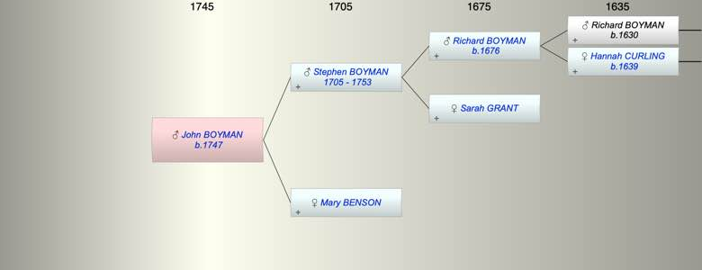

| [Index] |
| John BOYMAN (1747 - ) |
|  |
| b. 1747 at St Lawrence |
| Parents: |
| Stephen BOYMAN (1705 - 1753) |
| Mary BENSON |
| Events in John BOYMAN (1747 - )'s life | |||||
| Date | Age | Event | Place | Notes | Src |
| 1747 | John BOYMAN was born | St Lawrence | Note 1 | ||
| 1753 | 6 | Death of father Stephen BOYMAN (aged 48) | |||
| Note 1: bap St Lawrence 1 Nov 1747 son of Stpehen and Mary ex FMP |
| Created on a Mac™ using iFamily for Mac™ on 8 Oct 2023 |